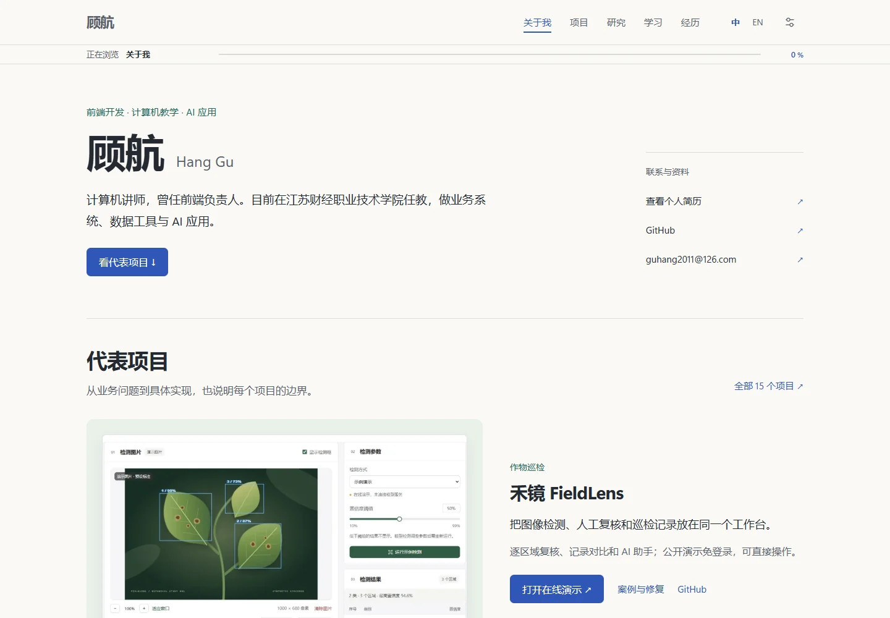
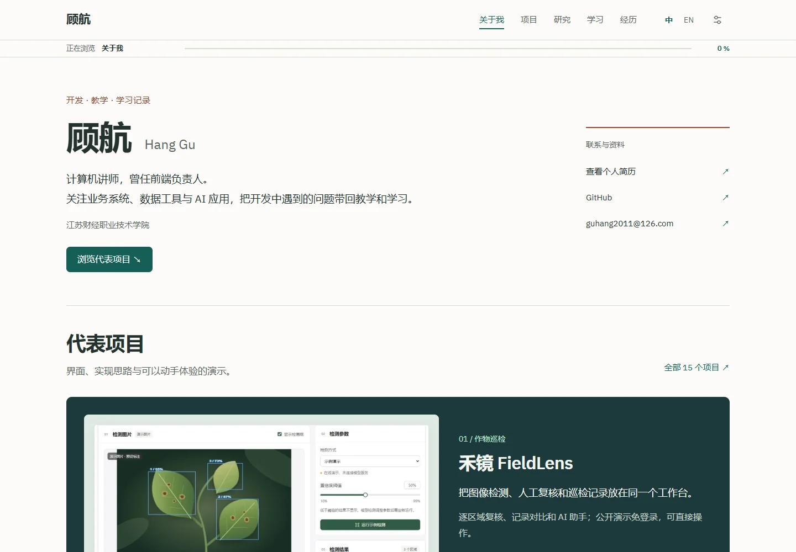
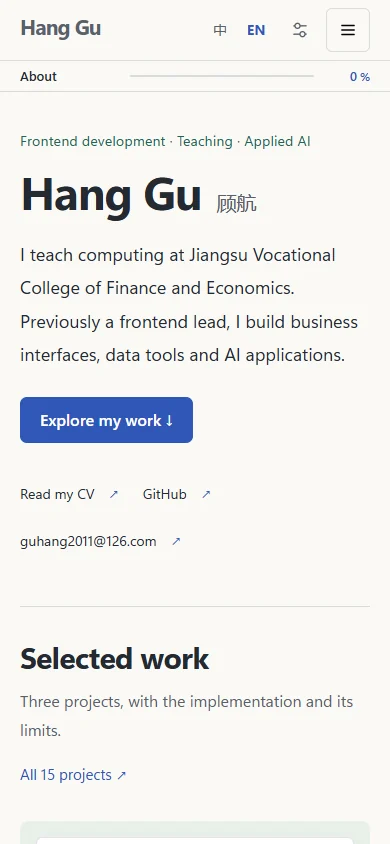
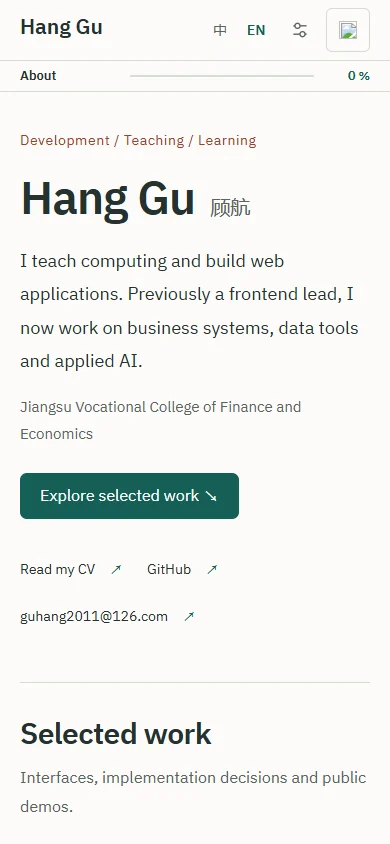

I kept wanting to add one more thing
While working on this site, I kept asking for more projects, more animation and stronger colors. It gained content, but parts still felt awkward. I eventually narrowed the questions to typography, navigation and how the sections worked together.
These desktop screenshots show the site before and after the 7 November revision, both at 1440 × 1000. Open either image for detail. The structure already existed; the revision changed the text hierarchy and presentation of the selected work.




Type size and color belong in the same decision
I used to treat a different font or another color as a route to a better-looking page. Separating body text, headings and supporting information made the changes easier to judge. Note text stays at least 17 pixels, with slightly larger introduction and project copy. English uses a local font, while Chinese uses an available system font.
I stopped adding a new color to every section. Warm white supports the reading area; deep green gives the first selected project more weight; blue and warm accents appear in smaller areas. This is a design choice for this site, not a claim that green is inherently better for an academic portfolio.
A phone-sized view reveals different problems
A desktop can hold contact information, project images and descriptions side by side. A phone needs a different order. Scaling everything down makes text harder to read, while simply stacking it all pushes the project links far down the page. The introduction and main project link stay visible, and contact information reflows.
This pair uses the same 390 × 844 English viewport: an archived image before the revision on the left and a fresh capture on the right. It shows line wrapping and the contact area. It does not establish an increase in traffic.




What I checked, and what I still need
The homepage keeps three selected projects, with the full collection in the directory. Recent notes use a small set of entry points as well. The remaining material is still accessible. Motion stays limited and follows the reduced-motion preference.
Checks include opening links, switching languages and looking for horizontal overflow at narrow widths. Search needs to find new material, images need to load, and the route back to the homepage should remain clear. The verification record lists the scope of this update.
I still need to observe a real reader finding a project from the homepage. I would like to note where they click and hesitate before making further layout changes. For this update, I added a small streaming-response experiment with stop and retry controls to give the earlier reflection on AI a concrete follow-up.
About this example
Based on saved screenshots, public code and checks for this site. Images identify their version and viewport. This is a personal design review, without user-study or conversion data.
Sources & further reading
Drafting and translation assisted by AI. See the sources and example scope above.